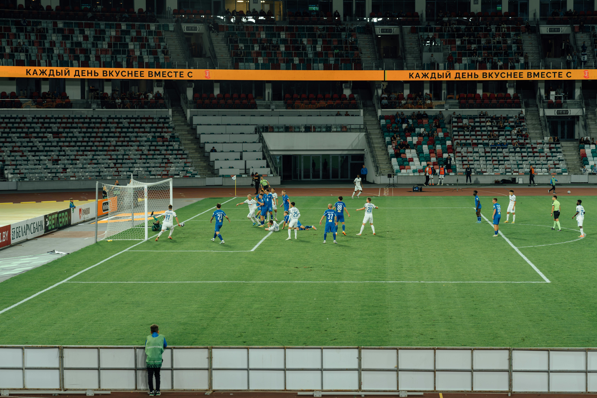

MATCHDAY HIGHLIGHTS
SEE ALL HIGHLIGHTS
WED, 28 JAN 2026
2
GOALS SCORED
6
MATCHDAY
58%
POSSESSION
12
SHOTS
8
FOULS
3
YELLOW CARDS
NEWS
SEE ALL NEWS

PREPARING FOR NEXT MATCH
The team is intensifying training sessions ahead of the crucial match against Juventus next week.
SEE NEWS

ESTADIO DEL MUNDO READY
Our home stadium is fully prepared for the upcoming match with enhanced facilities for fans.
SEE NEWS
SHOP
SEE ALL SHOP